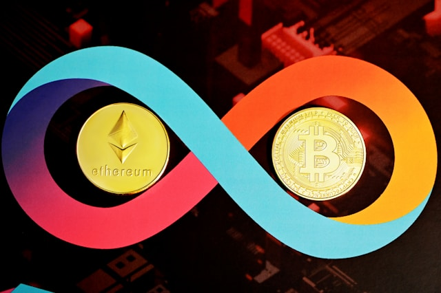

Haber Sitesi
Anasayfa
Gündem
Ekonomi
Yaşam
Sağlık

Bitcoin, merkezi olmayan bir dijital para birimirdir.
Merkezi olmayan bir yapıya sahip olması,
işlemlerin kullanıcılar arasında doğrudan gerçekleşmesini sağlar,
böylece herhangi bir merkezi otoriteye veya aracıya gerek kalmaz.
ABD'de bir kargo gemisi, Francis Scott Key Köprüsü'ne çarptı.
Maryland eyaletinin Baltimore kentindeki Key Köprüsü çarpma
sonucu çöktü ve köprü üzerindeki araçlar suya düştü.
UNESCO Dünya Mirası Listesi'nde yer alan, Karabük'ün tarihi
Safranbolu ilçesi 'Sakin Şehir' ünvanı aldı.

Beynine çip takılan kişinin düşünceleri 25 dakika boyunca okundu